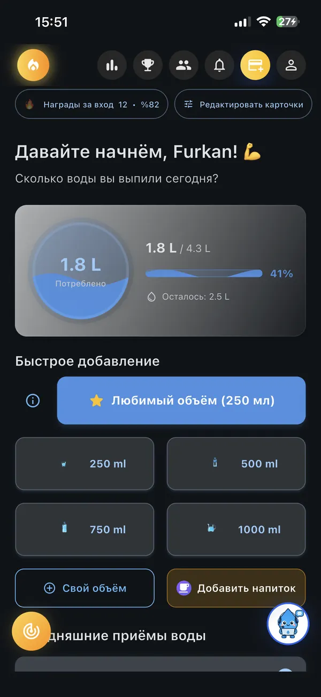
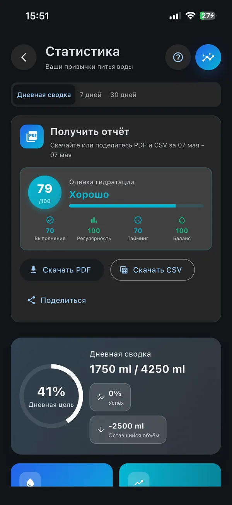
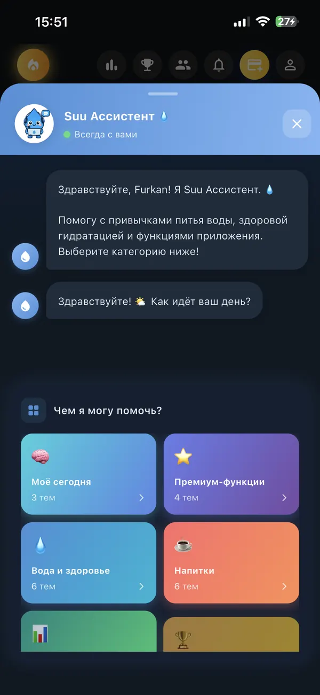
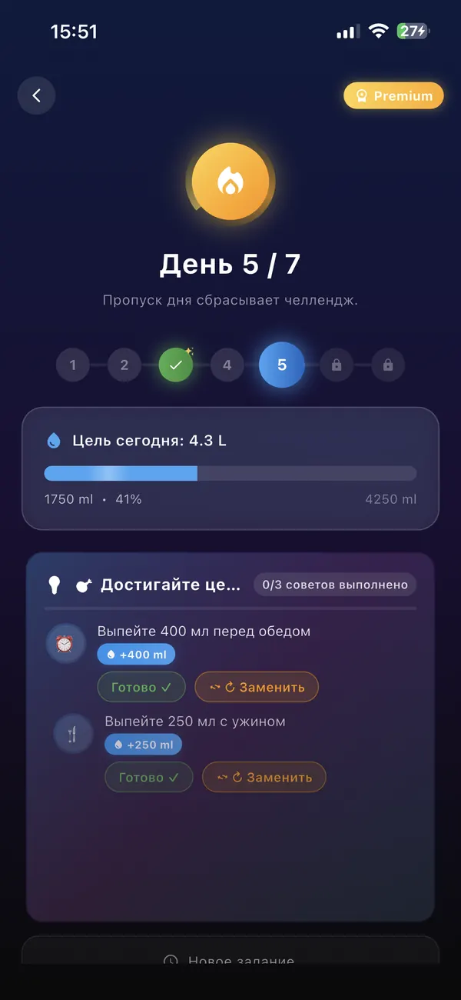
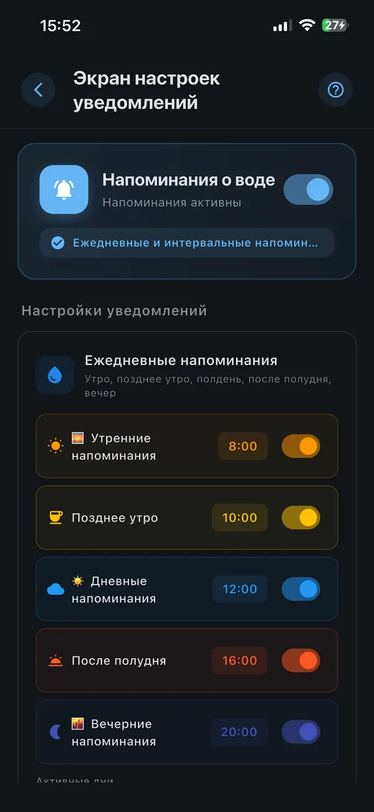

Цели по воде на основе активности, отслеживание кофеина и сахара, оценка гидратации, ИИ-тренер — попробуйте Premium бесплатно 3 дня.
Цели на основе активности, аналитика кофеина и сахара, оценка гидратации и ИИ-коучинг. Suu адаптируется под ваш образ жизни — будь вы спортсмен, офисный работник или новичок.
Установите цель по воде на основе вашего веса, уровня активности и климата. Suu подстраивается, когда меняется образ жизни.
Уведомления на основе реального прогресса: «Вы достигли 32% цели — пора пить!» Не фиксированный таймер. Меньше уведомлений — больше эффекта.
Добавляйте друзей по имени пользователя или QR-коду. Смотрите их прогресс и дневные цели. Создайте еженедельную лигу до 4 друзей — кросс-платформенно iOS + Android. Отправляйте уведомления «давай попьём вместе». Ни у одного конкурента нет ничего подобного.
Кофе, чай, сок, газировка — у каждого научно рассчитанный коэффициент обезвоживания. У Starbucks, Nevada, Greenwich и других популярных сетей свой раздел: выберите конкретный напиток, запишите его и сразу узнайте, сколько воды нужно дополнительно. Включена информация о кофеине и сахаре.
+300 мл автоматически добавляется при беременности, +700 мл при грудном вскармливании. Расчёт по триместрам, дневные цели для мам. Единственное приложение для воды с такой функцией.
Дневная оценка гидратации, недельные тренды, месячные сводки — экспорт в PDF или CSV. Поделитесь с врачом или диетологом.
Отслеживайте прогресс с виджета на экране блокировки или Dynamic Island — записывайте напиток, даже не разблокируя телефон.
Полная двусторонняя синхронизация с Apple HealthKit и Google Health Connect. Suu читает шаги и активные калории, чтобы динамически корректировать дневную цель. Записанная вода автоматически появляется в Apple/Google Health.
Отдельное watchOS-приложение на SwiftUI — записывайте воду прямо с запястья, не доставая телефон. Кольцо прогресса показывает дневную цель одним взглядом. Синхронизация в реальном времени через App Group.
Добавляйте воду без рук с помощью Siri Shortcuts. Создайте свои команды вроде «записать кофе» или «добавить 500 мл воды». Встроенное распознавание голоса работает и на Android — без Siri.
Получайте значки за выполнение дневных целей, открывайте награды за серии в 7, 30 и 100 дней и принимайте индивидуальные испытания по гидратации. Геймификация повышает приверженность привычкам — Suu делает питьё воды действительно увлекательным.
Suu подключается к OpenWeatherMap, чтобы получать температуру и влажность в вашем городе в реальном времени. В жаркие или влажные дни автоматически повышает дневную цель.
Ходьба, бег, плавание, велосипед, фитнес — Suu читает активности из Apple Health и Google Fit и автоматически увеличивает дневную цель воды в зависимости от типа, продолжительности и интенсивности тренировки. ~+400 мл после 30-минутного бега, ~+600 мл после часа плавания.
Suu отслеживает не только воду — он рассчитывает кофеин (мг) и сахар (г) в каждом напитке. Получайте умные предупреждения при приближении к лимиту FDA по кофеину (400 мг) или ВОЗ по добавленному сахару (25 г). Starbucks Latte? +150 мг кофеина, +14 г сахара.
Suu теперь намного больше, чем приложение для воды: личный тренер по гидратации, советы с учётом активности, аналитика напитков и предупреждения о кофеине/сахаре — полноценный ассистент здоровья в кармане. Контекстные сообщения каждый час и еженедельные персональные отчёты.
USD, EUR, российский рубль, тенге, турецкая лира, саудовский риял, дирхам ОАЭ — смотрите цены Premium в местной валюте. Цена при запуске: $15 / ≈€14 / ≈₽1 400 / ≈₸7 500 в год.
Чистый дизайн, ориентированный на одно: помочь вам пить больше воды без усилий.





Пользователи Suu по всему миру отслеживают миллионы стаканов каждый день.
Научно обоснованные статьи, чтобы понять, почему гидратация важна.
Присоединяйтесь к тысячам пользователей, которые ежедневно отслеживают потребление воды с Suu — бесплатно, без рекламы.